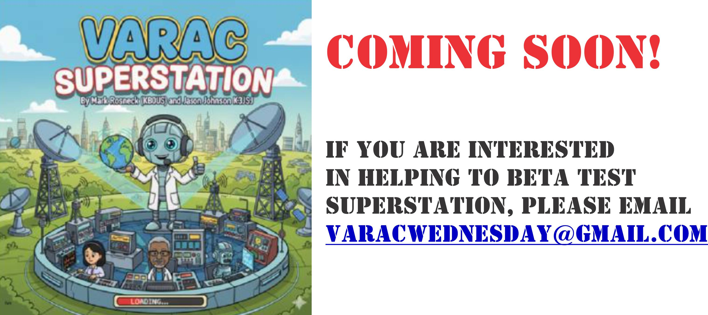

Public Beta Contest Log Submission
December 1st 4:45 UTC The Superstation public beta is in the books. We are now accepting log files. Please watch the YouTube video below for detailed instructions. Log files must be sent by 0500 UTC on Thursday December 4th. Late log files will not be accepted. The log file name must match the required naming convention covered in the video, callsign.cbr, in order to be accepted. Callsign must be your callsign
Public Beta Contest Update
November 30th 20:31 UTC We are in the closing hours of our public beta Superstation Contest. The contest runs from 11/17 through 11/30. We have received reports that Superstation ended counting early, that is before 0000Z on 12/1. The end date is 0000Z on the last day. We told everyone to select 11/30 in error. Please go into Settings and changed the end date to 12/1/2025. This will end Superstation at 0000Z on 12/1. We will post instructions later this evening on how you can send us your logs. Mark (KB08S) Jason (K3JSJ)
November 30, 2025 We have just released a four-part video series that covers details of the Superstation game. Learn about why Superstation was created, goals of the game, game mechanics, and how the human-to-human QSO scorer works. Finally, the video has tips on how to maximize your score.
It's a Stranger VarAC Wednesday
November 25, 2025 The shack was quiet until the static roared to life. Dustin leaned closer, eyes wide. “The signal… it’s trying to break through.” Across town, Lucas caught the same faint pulse: “There’s a date hidden in it… November 26th.” Mike’s voice cut through: “This isn’t noise. It’s a call. We need to connect.” Max grinned, sliding into the chair: “It’s VarAC Wednesday! If we all push our signals, we can build the SUPERSTATION!" So mark your calendars, operators — tomorrow is Wednesday, November 26th. Fire up your rigs, tune your antennas, and join the mission. Together we’ll cut through the static and make waves across the air. Be sure to check-in tomorrow and join the "Upside Down Radio Corp". The heroes of Stranger Things need your check-in to battle against the evil forces of Vecna and his minions Check out the trailer video for VarAC Wednesday November 26th 2025.
Privacy Policy published
November 14, 2025 We have published our privacy policy.
Week #27 Recap & Superstation public release
November 13, 2025 Check out our Week #27 Recap video & Superstation public release video.
All beta-teset slots taken
October 22, 2025 We have filled all of the open slots for beta-testers for SUPERSTATION. Once beta testing in complete we will make an announcement on the expected launch date of SUPERSTATION
SUPERSTATION Overview & and walk-through videos
Octber 19, 2025 We have officially launched our SUPERSTATION which has walk-through videos and annoncements about the application.
Announcing SUPERSTATION!
October 16, 2025 Jason (K3JSJ) and I (KB0US) are excited and jazzed to announce a new game/contest coming very soon for VarAC. Superstation is Global VarAC Game that is played over an extended time frame. Everyone in the world participates on an equal footing. The purpose of the SUPERSTATION game is to increase the number of VarAC QSOs and to encourage more DX activity. A typical game will run over multiple weeks although a game can be run at any length. SUPERSTATION is different from any other amateur radio “contest.” There is an element of a card and dice game, promoting QSOs that are more than simple exchanges, and demonstrating the DX capabilities of the mode. All amateurs around the world are invited to participate. SUPERSTATION is integrated into VarAC via the VarAC.db file allowing SUPERSTATION to read information about contacts you've made. The game does not use beacons in any way. But we do use Broadcast. How? Well . . . In the next few weeks, a SUPERSTATION page will appear on varacwednesday dot net. Here's where you'll find how to download the game software, a game manual. and a YouTube video to demonstrate how to play the game. Of course, we'll let you know when the page is available. Software Requirements: SUPERSTATION runs on a Windows 10 or 11 computer. SUPERSTATION runs as a single executable. You must have at least VarAC version 12.0. We would like a few more beta testers and if you're interested, email varacwednesday@gmail.com.  73, Mark KB0US Jason K3JSJ
Week 23 results & link to Birthday Award application
October 8, 2025 We have posted Week #23 results. Be sure to complete your VarAC Birthday award application.
Week 22 Recap and VarAC Birthday Award application
October 7, 2025
We have posted the Week #22 Re-cap video and it has instructions on how to apply for the VarAC Wednesday Birthday award certificate. You must check-in this week in order to qualify for the certificate. Don't forgot to check-in to VarAC Wednesday on October 8th!
Week 21 Recap video posted
September 29, 2025 The Week #21 Re-cap video has been posted. In the video we recognize new VarAC PIONEERS, operators who checked in for the first time, and a special operating evening October 8th.
Map updated thru Week 21
September 29, 2025
In Week #21 we added Iowa and Connecticut and thirty-nine (39) of the fifty (50) states in the United States have checked into VarAC Wednesday.
We are looking for operators to check-in from Alaska, Arkansas, Delaware, Maine, Nebraska, Nevada, North Dakota, South Dakota, Utah, Vermont, Washington DC, Wyoming.

Let's Celebrate VarAC's birthday!
September 24, 2025 We have a special surprise in store for our October 8th, 2025 net. A very special VarAC Birthday Celebration
Let's complete the map!
September 22, 2025
Operators from thirty-seven (37) of the fifty (50) states in the United States have checked into VarAC Wednesday. We are looking for thireeen states + the District of Columbia. If you are a VarAC operator in one of the missing states below please consider checking into VarAC Wednesday. Let's complete the VarAC Wednesday map for the United States!
We are looking for operators to check-in from Alaska, Arkansas, Connecticut, Delaware, Iowa, Maine, Nebraska, Nevada, North Dakota, South Dakota, Utah, Vermont, Washington DC, Wyoming.

Congratulations to our VarAC Pioneers!
September 17, 2025 We have just completed VarAC Wednesday Week #20. Three operators have qualified for our VarAC Pioneer award. Check out our VarAC Pioneer Awardees page each week for updates to the list of operators who have qualified for this award.
GPS Format Checking tool
September 14, 2025 We have release resources to allow you to verify the GPS you in your check-in message is correct format. Use our GPS Coordinate Format Checker to verify your GPS confirms to standard our program uses to verify check-ins. Please see our VarAC Wednesday GPS working aid" for details on formats that we accept
GPS coordinates in check-in messages
August 30, 2025 We curretly look up participants' callsigns on QRZ.com to obtain GPS coordinate for plotting check-ins on the map. QRZ might contain outdated location data. Some operator operate portable and their location might change from week to week. Starting September 3rd, 2025 we will begin extracting GPS locations from check-in messages. Jason Johnson's VarAC GPS Setup (Static location) training walks through how to configure your VarAC settings to start uing this new feature.
VarAC Bot
August 29, 2025 - Check out Mark Rosneck's VarAC Notification Extension with VarAC Bot training. This extension to VarAC allows you to receive real-time alerts from your station on your Telegram account.
Why am I missing from the map?
August 29, 2025 - Wondering why your station is missing from the check-in map? Check out "Where am I on the check-in map?" training article.
Growth Award
July 31, 2025 - Be sure to get your VarAC Wednesday Growth Award and post it to your QRZ.com page!
We've got maps!
August 5, 2025 - We now have a check-in map that shows locations of participants and email gateways stations.
Growth Award
July 31, 2025 - Be sure to get your VarAC Wednesday Growth Award and post it to your QRZ.com page!
VarAC Wednesday in the news
July 25, 2025 - Check out Amateure Radio Collective of Western Carolina's (ARCWC) feature Announcing VarAC Wednesday.
Website Launch
July 13, 2025 - Check out our Official website Launch message.